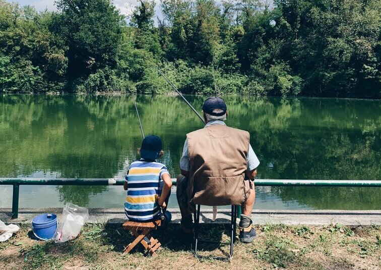

- Currently:
- Current Temp: ° F
- High: ° F
- Wind Chill: °F
- Humidity: %
- Wind Speed: mph
Fish Haven Weather Summary
Upcoming Events
Idaho Fish and Game announces free fishing day on Saturday
Experienced or beginning fishers can spend the day at numerous locations without charge throughout the state, but there are still rules, such as bag size, in place. Additional information regarding regulations can be found at the Idaho Fish and Game website.
“It’s a great opportunity for people to go enjoy fishing without having to pay for a fishing license,” said Idaho Fish and Game spokesman Roger Phillips.
Phillips emphasized that this is an opportunity for the whole family to participate in a recreational event without having to spend money.
Usually Idaho Fish and Game goes to fishing locations throughout the state to host events and give lessons for free fishing day. Phillips says with current COVID-19 protocols, those events will not be happening this year but people are still welcome to go out and enjoy free fishing.
Continue reading here